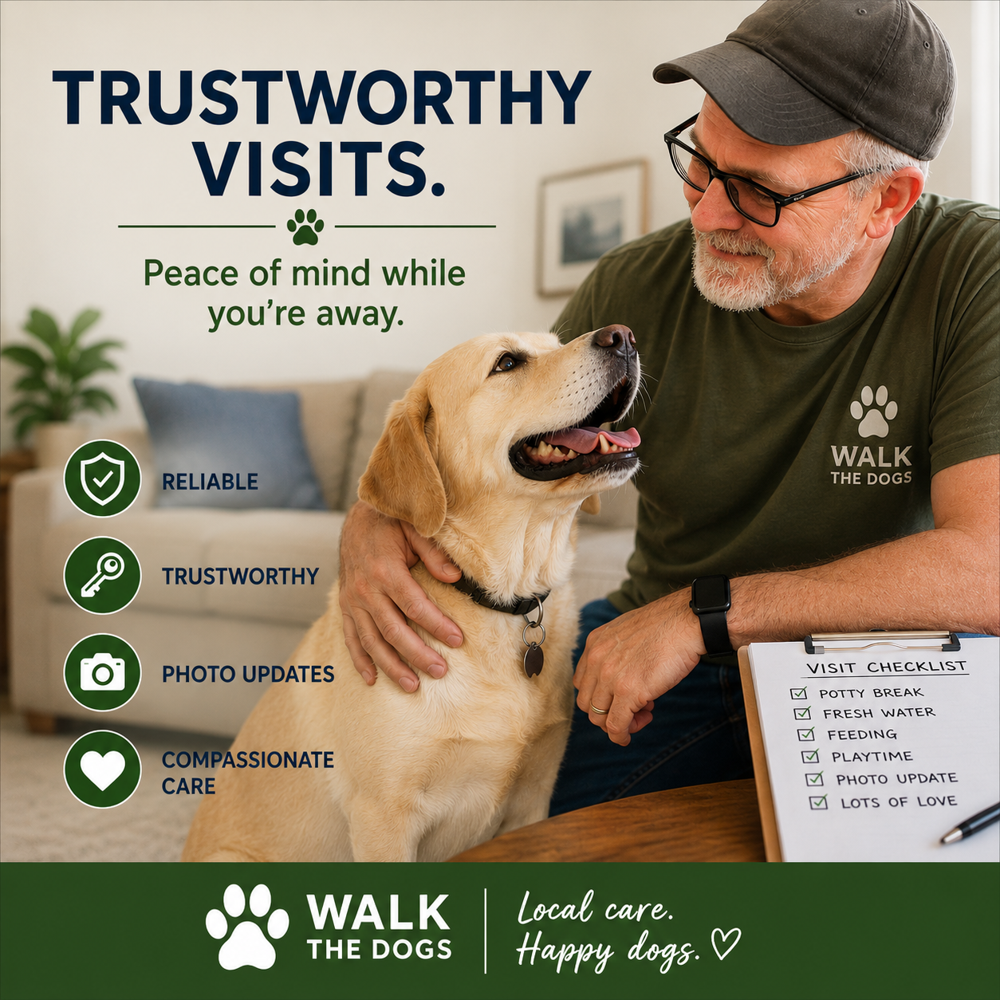

Walk The Dogs was created to give pet owners peace of mind and dogs the care, exercise, and attention they deserve.
Hi, I'm Rick. After retiring, I decided to combine my love of dogs with a service that helps pet owners feel confident their pets are receiving dependable, caring attention.
As a local Belton resident, I know how important it is to have someone trustworthy caring for your pets. Every dog is treated with patience, respect, and the same level of care I would want for my own.
My goal is simple: happy dogs, clear communication, and peace of mind for their owners.
You can count on consistent service, clear communication, and a trusted presence for your dog. Every visit is handled with care, patience, and attention to detail.
